Netty 出发点作为一款高性能的 RPC 框架必然涉及到频繁的内存分配销毁操作，如果是在堆上分配内存空间将会触发频繁的GC，JDK 在1.4之后提供的 NIO 也已经提供了直接直接分配堆外内存空间的能力，但是也仅仅是提供了基本的能力，创建、回收相关的功能和效率都很简陋。基于此，在堆外内存使用方面，Netty 自己实现了一套创建、回收堆外内存池的相关功能。基于此我们一起来看一下 Netty 是如何实现内存分配的。
数据容器
数据容器的分类
谈到数据保存肯定要说到内存分配，按照存储空间来划分，可以分为 堆内存 和 堆外内存；按照内存区域连贯性来划分可以分为池化内存和非池化内存。这些划分在 Netty 中的实现接口分别是：
按照底层存储空间划分：
- 堆缓冲区：HeapBuffer；
- 直接缓冲区：DirectBuffer。
按照是否池化划分：
- 池化：PooledBuffer；
- 非池化：UnPooledBuffer。
默认使用 PoolDireBuf 类型的内存, 这些内存主要由 PoolArea 管理。另外 Netty 并不是直接对外暴露这些 API，提供了 Unsafe 类作为出口暴露数据分配的相关操作。
什么是池化？
一般申请内存是检查当前内存哪里有适合当前数据块大小的空闲内存块，如果有就将数据保存在当前内存块中。
那么池化想做的事情是：既然每次来数据都要去找内存地址来存，我就先申请一块内存地址，这一块就是我的专用空间，内存分配、回收我全权管理。
池化解决的问题：
内碎片
内碎片就是申请的地址空间大于真正数据使用的内存空间。比如固定申请1M的空间作为某个线程的使用内存，但是该线程每次最多只占用0.5M，那么每次都有0.5M的碎片。如果该空间不被有效回收时间一长必然存在内存空洞。
外碎片
外碎片是指多个内存空间合并的时候发现不够分配给待使用的空间大小。比如有一个 20byte，13byte 的连续内存空间可以被回收，现在有一个 48byte 的数据块需要存储，而这两个加起来也只有 33byte 的空间，必然不会被使用到。
实现内存池
链表维护内存池
最简单的就是弄一个链表来维护当前空闲的内存空间地址。如果有使用就从链表删除，有释放就加入链表对应位置。这种方式实现简单，但是搜索和释放内存维护的难度还是比较大，不太适合。
定长内存空间分配
维护两个列表，一个是未分配内存列表，一个是已分配内存列表。每个内存块都是一样大小，分配时如果不够就将多个块合并到一起。这种方式的缺点就是会浪费一定的内存空间，如果有特定的场景还是没有问题。
多段定长池分配
在上面的定长分配基础上，由原来的固定一个长度分配空间变为按照不同对象大小(8，16，32，64，128，256，512，1k…64K)，的方式分配多个固定大小的内存池。每次要申请内存的时候按照当前对象大小去对应的池中查找是否有剩余空间。
Linux 本身支持动态内存分配和释放，对应的命令为：malloc/free。malloc 的全称是 memory allocation，中文叫动态内存分配，用于申请一块连续的指定大小的内存块区域以
void*类型返回分配的内存区域地址。malloc / free的实现过程：
- 空闲存储空间以空闲链表的方式组织（地址递增），每个块包含一个长度、一个指向下一块的指针以及一个指向自身存储空间的指针。（ 因为程序中的某些地方可能不通过 malloc 调用申请，因此 malloc 管理的空间不一定连续）
- 当有申请请求时，malloc 会扫描空闲链表，直到找到一个足够大的块为止（首次适应）(因此每次调用malloc 时并不是花费了完全相同的时间）
- 如果该块恰好与请求的大小相符，则将其从链表中移走并返回给用户。如果该块太大，则将其分为两部分，尾部的部分分给用户，剩下的部分留在空闲链表中（更改头部信息）。因此 malloc 分配的是一块连续的内存。
- 释放时首先搜索空闲链表，找到可以插入被释放块的合适位置。如果与被释放块相邻的任一边是一个空闲块，则将这两个块合为一个更大的块，以减少内存碎片。
内存分配
Netty 采用了 jemalloc 的思想，这是 FreeBSD 实现的一种并发 malloc 的算法。jemalloc 依赖多个 Arena(分配器) 来分配内存，运行中的应用都有固定数量的多个 Arena，默认的数量与处理器的个数有关。系统中有多个 Arena 的原因是由于各个线程进行内存分配时竞争不可避免，这可能会极大的影响内存分配的效率，为了缓解高并发时的线程竞争，Netty 允许使用者创建多个分配器（Arena）来分离锁，提高内存分配效率。
线程首次分配/回收内存时，首先会为其分配一个固定的 Arena。线程选择 Arena 时使用 round-robin 的方式，也就是顺序轮流选取。
每个线程各种保存 Arena 和缓存池信息，这样可以减少竞争并提高访问效率。Arena 将内存分为很多 Chunk 进行管理，Chunk 内部保存 Page，以页为单位申请。申请内存分配时，会将分配的规格分为几类：TINY，SAMLL，NORMAL 和 HUGE，分别对应不同的范围，处理过程也不相同。
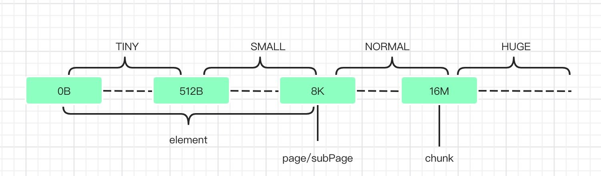
tiny 代表了大小在 0-512B 的内存块；
small 代表了大小在 512B-8K 的内存块；
normal 代表了大小在 8K-16M 的内存块；
huge 代表了大于 16M 的内存块。
每个块里面又定义了更细粒度的单位来分配数据：
- Chunk：一个 Chunk 的大小是 16M，Chunk 是 Netty 对操作系统进行内存申请的单位，后续所有的内存分配都是在 Chunk 里面进行操作。
- Page：Chunk 内部以 Page 为单位分配内存，一个 Page 大小为 8K。当我们需要 16K 的空间时，Netty 就会从一个 Chunk 中找到两个 Page 进行分配。
- Subpage 和 element：element 是比 Page 更小的单位，当我们申请小于 8K 的内存时，Netty 会以 element 为单位进行内存分配。element 没有固定大小，具体由用户的需求决定。Netty 通过 Subpage 管理 element，Subpage 是由 Page 转变过来的。当我们需要 1K 的空间时，Netty 会把一个 Page 变成 Subpage，然后把 Subpage 分成 8 个 1K 的 element 进行分配。
线程分配内存主要从两个地方分配: PoolThreadCache 和 Arena。其中 PoolThreadCache 线程独享, Arena 为几个线程共享。
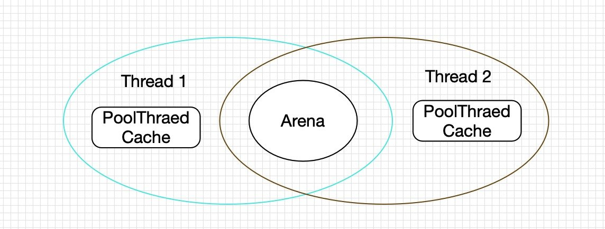
初次申请内存的时候，Netty 会从一整块内存（Chunk）中分出一部分来给用户使用，这部分工作是由 Arena 来完成。而当用户使用完毕释放内存的时候，这些被分出来的内存会按不同规格大小放在 PoolThreadCache 中缓存起来。当下次要申请内存的时候，就会先从 PoolThreadCache 中找。
Chunk、Page、Subpage 和 element 都是 Arena 中的概念，Arena 的工作就是从一整块内存中分出合适大小的内存块。Arena 中最大的内存单位是 Chunk，这是 Netty 向操作系统申请内存的单位。而一块 Chunk（16M） 申请下来之后，内部会被分成 2048 个 Page（8K），当用户向 Netty 申请超过 8K 内存的时候，Netty 会以 Page 的形式分配内存。
Chunk 内部通过伙伴算法管理 Page，具体实现为一棵完全平衡二叉树：
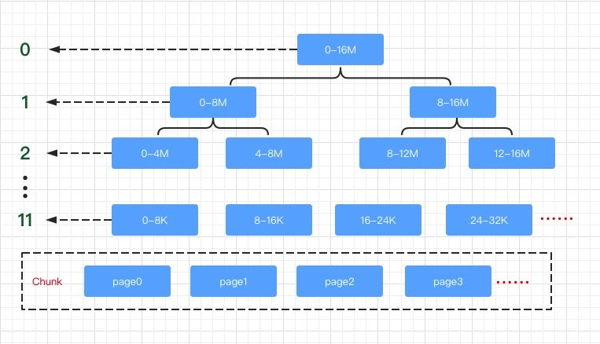
二叉树中所有子节点管理的内存也属于其父节点。当我们要申请大小为 16K 的内存时，我们会从根节点开始不断寻找可用的节点，一直到第 10 层。那么如何判断一个节点是否可用呢？Netty 会在每个节点内部保存一个值，这个值代表这个节点之下的第几层还存在未分配的节点。比如第 9 层的节点的值如果为 9，就代表这个节点本身到下面所有的子节点都未分配；如果第 9 层的节点的值为 10，代表它本身不可被分配，但第 10 层有子节点可以被分配；如果第 9 层的节点的值为 12，此时可分配节点的深度大于了总深度，代表这个节点及其下面的所有子节点都不可被分配。下图描述了分配的过程：
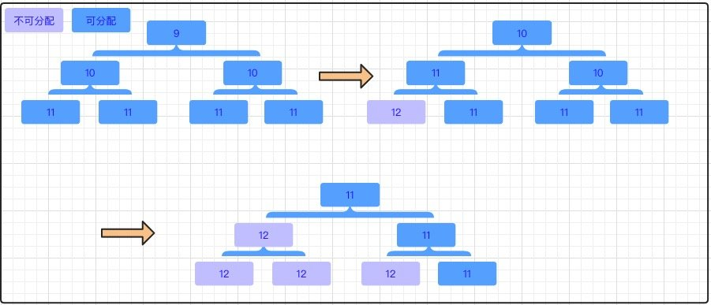
对于小内存（小于4096）的分配还会将 Page 细化成更小的单位 Subpage。Subpage 按大小分有两大类：
- Tiny：小于 512 的情况，最小空间为 16，对齐大小为 16，区间为[16,512)，所以共有 32 种情况。
- Small：大于等于 512 的情况，总共有四种，512,1024,2048,4096。
PoolSubpage 中直接采用位图管理空闲空间（因为不存在申请 k 个连续的空间），所以申请释放非常简单。
第一次申请小内存空间的时候，需要先申请一个空闲页，然后将该页转成 PoolSubpage，再将该页设为已被占用，最后再把这个 PoolSubpage 存到 PoolSubpage 池中。这样下次就不需要再去申请空闲页了，直接去池中找就好了。Netty 中有 36 种 PoolSubpage，所以用 36 个 PoolSubpage 链表表示 PoolSubpage 池。
因为单个 PoolChunk 只有 16M，这远远不够用，所以会很很多很多 PoolChunk，这些 PoolChunk 组成一个链表，然后用 PoolChunkList 持有这个链表。
我们先从内存分配器 PoolArena 来分析 Netty 中的内存是如何分配的，Area 的工作就是从一整块内存中协调如何分配合适大小的内存给当前数据使用。PoolArena 是 Netty 的内存池实现抽象类，其内部子类为 HeapArena 和 DirectArena，HeapArena 对应堆内存（heap buffer），DirectArena 对应堆外直接内存(direct buffer)，两者除了操作的内存（byte[]和ByteBuffer）不同外其余完全一致。
从结构上来看，PoolArena 中主要包含三部分子内存池：
tinySubpagePools；
smallSubpagePools；
一系列的 PoolChunkList。
tinySubpagePools 和 smallSubpagePools 都是 PoolSubpage 的数组，数组长度分别为 32 和 4。
PoolChunkList 则主要是一个容器，其内部可以保存一系列的 PoolChunk 对象，并且，Netty 会根据内存使用率的不同，将 PoolChunkList 分为不同等级的容器。
Copyabstract class PoolArena<T> implements PoolArenaMetric {
enum SizeClass {
Tiny,
Small,
Normal
}
// 该参数指定了tinySubpagePools数组的长度，由于tinySubpagePools每一个元素的内存块差值为16，
// 因而数组长度是512/16，也即这里的512 >>> 4
static final int numTinySubpagePools = 512 >>> 4;
//表示该PoolArena的allocator
final PooledByteBufAllocator parent;
//表示PoolChunk中由Page节点构成的二叉树的最大高度，默认11
private final int maxOrder;
//page的大小，默认8K
final int pageSize;
// 指定了叶节点大小8KB是2的多少次幂，默认为13，该字段的主要作用是，在计算目标内存属于二叉树的
// 第几层的时候，可以借助于其内存大小相对于pageShifts的差值，从而快速计算其所在层数
final int pageShifts;
//默认16MB
final int chunkSize;
// 由于PoolSubpage的大小为8KB=8196，因而该字段的值为
// -8192=>=> 1111 1111 1111 1111 1110 0000 0000 0000
// 这样在判断目标内存是否小于8KB时，只需要将目标内存与该数字进行与操作，只要操作结果等于0，
// 就说明目标内存是小于8KB的，这样就可以判断其是应该首先在tinySubpagePools或smallSubpagePools
// 中进行内存申请
final int subpageOverflowMask;
// 该参数指定了smallSubpagePools数组的长度，默认为4
final int numSmallSubpagePools;
//tinySubpagePools用来分配小于512 byte的Page
private final PoolSubpage<T>[] tinySubpagePools;
//smallSubpagePools用来分配大于等于512 byte且小于pageSize内存的Page
private final PoolSubpage<T>[] smallSubpagePools;
//用来存储用来分配给大于等于pageSize大小内存的PoolChunk
//存储内存利用率50-100%的chunk
private final PoolChunkList<T> q050;
//存储内存利用率25-75%的chunk
private final PoolChunkList<T> q025;
//存储内存利用率1-50%的chunk
private final PoolChunkList<T> q000;
//存储内存利用率0-25%的chunk
private final PoolChunkList<T> qInit;
//存储内存利用率75-100%的chunk
private final PoolChunkList<T> q075;
//存储内存利用率100%的chunk
private final PoolChunkList<T> q100;
//堆内存(heap buffer)
static final class HeapArena extends PoolArena<byte[]> {
}
//堆外直接内存(direct buffer)
static final class DirectArena extends PoolArena<ByteBuffer> {
}
}
如上所示，PoolArena 是由多个 PoolChunk 组成的大块内存区域，而每个 PoolChun k则由多个 Page 组成。当需要分配的内存小于 Page 的时候，为了节约内存采用 PoolSubpage 实现小于 Page 大小内存的分配。在PoolArena 中为了保证 PoolChunk 空间的最大利用化，按照 PoolArena 中各 个PoolChunk 已使用的空间大小将其划分为 6 类：
- qInit：存储内存利用率
0-25%的 chunk； - q000：存储内存利用率
1-50%的 chunk； - q025：存储内存利用率
25-75%的 chunk； - q050：存储内存利用率
50-100%的 chunk； - q075：存储内存利用率
75-100%的 chunk； - q100：存储内存利用率
100%的 chunk。
PoolArena 维护了一个 PoolChunkList 组成的双向链表，每个 PoolChunkList 内部维护了一个 PoolChunk 双向链表。分配内存时，PoolArena 通过在 PoolChunkList 找到一个合适的 PoolChunk，然后从 PoolChunk 中分配一块内存。
下面来看 PoolArena 是如何分配内存的：
Copyprivate void allocate(PoolThreadCache cache, PooledByteBuf<T> buf, final int reqCapacity) {
// 将需要申请的容量格式为 2^N
final int normCapacity = normalizeCapacity(reqCapacity);
// 判断目标容量是否小于8KB，小于8KB则使用tiny或small的方式申请内存
if (isTinyOrSmall(normCapacity)) { // capacity < pageSize
int tableIdx;
PoolSubpage<T>[] table;
boolean tiny = isTiny(normCapacity);
// 判断目标容量是否小于512字节，小于512字节的为tiny类型的
if (tiny) { // < 512
// 将分配区域转移到 tinySubpagePools 中
if (cache.allocateTiny(this, buf, reqCapacity, normCapacity)) {
// was able to allocate out of the cache so move on
return;
}
// 如果无法从当前线程缓存中申请到内存，则尝试从tinySubpagePools中申请，这里tinyIdx()方法
// 就是计算目标内存是在tinySubpagePools数组中的第几号元素中的
tableIdx = tinyIdx(normCapacity);
table = tinySubpagePools;
} else {
// 如果目标内存在512byte~8KB之间，则尝试从smallSubpagePools中申请内存。这里首先从
// 当前线程的缓存中申请small级别的内存，如果申请到了，则直接返回
if (cache.allocateSmall(this, buf, reqCapacity, normCapacity)) {
// was able to allocate out of the cache so move on
return;
}
tableIdx = smallIdx(normCapacity);
table = smallSubpagePools;
}
// 获取目标元素的头结点
final PoolSubpage<T> head = table[tableIdx];
// 这里需要注意的是，由于对head进行了加锁，而在同步代码块中判断了s != head，
// 也就是说PoolSubpage链表中是存在未使用的PoolSubpage的，因为如果该节点已经用完了，
// 其是会被移除当前链表的。也就是说只要s != head，那么这里的allocate()方法
// 就一定能够申请到所需要的内存块
synchronized (head) {
// s != head就证明当前PoolSubpage链表中存在可用的PoolSubpage，并且一定能够申请到内存，
// 因为已经耗尽的PoolSubpage是会从链表中移除的
final PoolSubpage<T> s = head.next;
// 如果此时 subpage 已经被分配过内存了执行下文，如果只是初始化过，则跳过该分支
if (s != head) {
// 从PoolSubpage中申请内存
assert s.doNotDestroy && s.elemSize == normCapacity;
// 通过申请的内存对ByteBuf进行初始化
long handle = s.allocate();
assert handle >= 0;
// 初始化 PoolByteBuf 说明其位置被分配到该区域，但此时尚未分配内存
s.chunk.initBufWithSubpage(buf, handle, reqCapacity);
// 对tiny类型的申请数进行更新
if (tiny) {
allocationsTiny.increment();
} else {
allocationsSmall.increment();
}
return;
}
}
// 走到这里，说明目标PoolSubpage链表中无法申请到目标内存块，因而就尝试从PoolChunk中申请
allocateNormal(buf, reqCapacity, normCapacity);
return;
}
// 走到这里说明目标内存是大于8KB的，那么就判断目标内存是否大于16M，如果大于16M，
// 则不使用内存池对其进行管理，如果小于16M，则到PoolChunkList中进行内存申请
if (normCapacity <= chunkSize) {
// 小于16M，首先到当前线程的缓存中申请，如果申请到了则直接返回，如果没有申请到，
// 则到PoolChunkList中进行申请
if (cache.allocateNormal(this, buf, reqCapacity, normCapacity)) {
// was able to allocate out of the cache so move on
return;
}
allocateNormal(buf, reqCapacity, normCapacity);
} else {
// 对于大于16M的内存，Netty不会对其进行维护，而是直接申请，然后返回给用户使用
allocateHuge(buf, reqCapacity);
}
}
所有内存分配的 size 都会经过 normalizeCapacity() 进行处理，申请的容量总是会被格式为 2^N。主要规则如下：
- 如果目标容量小于 16 字节，则返回 16；
- 如果目标容量大于 16 字节，小于 512 字节，则以 16 字节为单位，返回大于目标字节数的第一个 16 字节的倍数。比如申请的 100 字节，那么大于 100 的 16 整数倍最低为： 16 * 7 = 112，因而返回 112；
- 如果目标容量大于 512 字节，则返回大于目标容量的第一个 2 的指数幂。比如申请的 1000 字节，那么返回的将是：2^10 = 1024。
PoolArena 提供了两种方式进行内存分配：
- PoolSubpage 用于分配小于 8k 的内存
- tinySubpagePools：用于分配小于 512 字节的内存，默认长度为 32，因为内存分配最小为 16，每次增加16，直到512，区间[16，512)一共有 32 个不同值；
- smallSubpagePools：用于分配大于等于 512 字节的内存，默认长度为 4；
- tinySubpagePools 和 smallSubpagePools 中的元素默认都是 subpage。
poolChunkList 用于分配大于 8k 的内存
上面已经解释了 q 开头的几个变量用于保存大于 8k 的数据。
默认先尝试从 poolThreadCache 中分配内存，PoolThreadCache 利用 ThreadLocal 的特性，消除了多线程竞争，提高内存分配效率；
首次分配时，poolThreadCache 中并没有可用内存进行分配，当上一次分配的内存使用完并释放时，会将其加入到 poolThreadCache 中，提供该线程下次申请时使用。
如果是分配小内存，则尝试从 tinySubpagePools 或 smallSubpagePools 中分配内存，如果没有合适 subpage，则采用方法 allocateNormal 分配内存。
如果分配一个 page 以上的内存，直接采用方法 allocateNormal() 分配内存，allocateNormal()则会将申请动作交由 PoolChunkList 进行。
Copyprivate synchronized void allocateNormal(PooledByteBuf<T> buf, int reqCapacity, int normCapacity) {
//如果在对应的PoolChunkList能申请到内存，则返回
if (q050.allocate(buf, reqCapacity, normCapacity) || q025.allocate(buf, reqCapacity, normCapacity) ||
q000.allocate(buf, reqCapacity, normCapacity) || qInit.allocate(buf, reqCapacity, normCapacity) ||
q075.allocate(buf, reqCapacity, normCapacity)) {
++allocationsNormal;
return;
}
// Add a new chunk.
PoolChunk<T> c = newChunk(pageSize, maxOrder, pageShifts, chunkSize);
long handle = c.allocate(normCapacity);
++allocationsNormal;
assert handle > 0;
c.initBuf(buf, handle, reqCapacity);
qInit.add(c);
}
首先将申请动作按照 q050->q025->q000->qInit->q075 的顺序依次交由各个 PoolChunkList 进行处理，如果在对应的 PoolChunkList 中申请到了内存，则直接返回。
如果申请不到，那么直接创建一个新的 PoolChunk，然后在该 PoolChunk 中申请目标内存，最后将该 PoolChunk 添加到 qInit 中。
上面说过 Chunk 是 Netty 向操作系统申请内存块的最大单位，每个 Chunk 是16M，PoolChunk 内部通过 memoryMap 数组维护了一颗完全平衡二叉树作为管理底层内存分布及回收的标记位，所有的子节点管理的内存也属于其父节点。
关于 PoolChunk 内部如何维护完全平衡二叉树就不在这里展开，大家有兴趣可以自行看源码。
对于内存的释放，PoolArena 主要是分为两种情况，即池化和非池化，如果是非池化，则会直接销毁目标内存块，如果是池化的，则会将其添加到当前线程的缓存中。如下是 free()方法的源码：
Copypublic void free(PoolChunk<T> chunk, ByteBuffer nioBuffer, long handle, int normCapacity,
PoolThreadCache cache) {
// 如果是非池化的，则直接销毁目标内存块，并且更新相关的数据
if (chunk.unpooled) {
int size = chunk.chunkSize();
destroyChunk(chunk);
activeBytesHuge.add(-size);
deallocationsHuge.increment();
} else {
// 如果是池化的，首先判断其是哪种类型的，即tiny，small或者normal，
// 然后将其交由当前线程的缓存进行处理，如果添加成功，则直接返回
SizeClass sizeClass = sizeClass(normCapacity);
if (cache != null && cache.add(this, chunk, nioBuffer, handle,
normCapacity, sizeClass)) {
return;
}
// 如果当前线程的缓存已满，则将目标内存块返还给公共内存块进行处理
freeChunk(chunk, handle, sizeClass, nioBuffer);
}
}
Netty的内存分配——ByteBuf
Netty 为了更高效的管理内存，自己实现了一套内存管理的逻辑，借鉴 jemalloc 的思想实现了一套池化内存管理的思路：
- Arena 作为内存分配器，可以被多个竞争获取内存的线程公用。
- Arena 将从操作系统中申请的内存块命名为 Chunk，每个 Chunk 为16M，后续所有的操作都是在 Chunk 内进行；
- Chunk 内部以 Page 为单位，一个 Page 大小为 8K；
- 有的时候8K对于待申请的资源来说还是很大，所以 Page 内部又做了进一步的划分，有了 SubPage 的概念，SubPage 并没有固定大小，取决于用于的需要。即在 Page 内部只要不超出 Page 大小，你需要多大就划分出多大的 SubPage 空间。
以上 4 个模块： Arena， Chunk，Page， SubPage 构成了 Netty 内存存储的基本概念。
Netty 内存分块的最小单位是 SubPage ，那么数据是以什么样的方式保存在 SubPage 中呢？这里就不得不说到 Netty 对象存储的最小单位：ByteBuf。
为什么Netty 要自己实现数据容器
Netty 底层基于 NIO实现，NIO 的标准三件套：Selector，Channel，Buffer 因为使用比较复杂已经被 Netty 封装好同时提供更多扩展性功能对外用自定义的对象暴露相关操作。Buffer 的功能就是数据容器，Channel 读到数据先存储到 Buffer 中然后进行传输。今天我们要讨论的是 Netty 中的数据容器：ByteBuf，注意不是 java.nio.ByteBuffer。
Netty 为什么要重新写一套数据容器呢？众所周知 Netty 全面封装了 NIO 的核心 API，对外暴露的全都是自己封装的接口，很重要的原因就在于 NIO 的 API 使用起来太复杂，既然要封装，那就封装的彻底一些把该有的功能都补齐。NIO 的 Buffer 有以下缺点：
- 当调用
allocate()方法分配内存时，Buffer 的长度就固定了，不能动态扩展和收缩，当写入数据大于缓冲区的 capacity 时会发生数组越界错误； - Buffer只有一个位置标志位属性 position，读写切换时必须先调用
flip()或rewind()方法； - Buffer只提供了存取、翻转、释放、标志、比较、批量移动等缓冲区的基本操作，想使用高级的功能(比如池化)，就得自己手动进行封装及维护，使用非常不方便。
另外很重要的一点就是，JDK 是基于堆的内存管理，Netty 出发点作为一款高性能的 RPC 框架必然涉及到频繁的内存分配销毁操作，如果是在堆上分配内存空间将会触发频繁的GC，JDK 在1.4之后提供的 NIO 也已经提供了直接直接分配堆外内存空间的能力，但是也仅仅是提供了基本的能力，创建、回收相关的功能和效率都很简陋。基于此，在堆外内存使用方面，Netty 自己实现了一套创建、回收堆外内存池的相关功能。
所以基于上面这些或多或少的缺点 Netty 自己封装了新的数据容器 ByteBuf，要解决的事情就是提供 更高性能，更多能力，API 更加简明 地操作数据内存分配的能力。
ByteBuf 整体结构
作为存储字节码的容器，大概的功能不外乎是字节数据的写入，读取，扩容，收缩等等相关的功能。ByteBuf 提供了 读指针 和 写指针 分别提示当前读取位置 和 可写入的位置。这些定义我们可以在 AbstractByteBuf 中看到，ByteBuf 作为一个接口，AbstractByteBuf 是它的默认实现类。
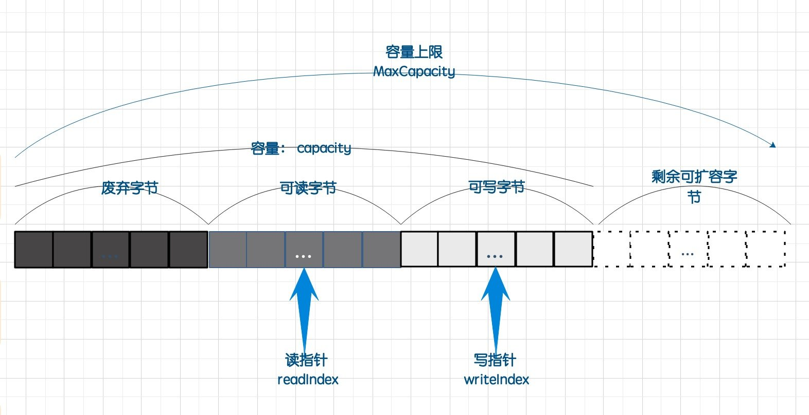
上图显示了 ByteBuf 的结构，主要由已读字节、可读字节、可写字节三部分组成，使用readerIndex与writerIndex分隔，三部分加起来称为容量 capacity。readerIndex 表示可读字节的起始位置，writerIndex 表示可写字节的起始位置。
- readerIndex(读指针)：读取的起始位置，每读取一个字节就加 1，当它等于 writerIndex 时说明可读数据已读完；
- writerIndex(写指针)：写入的起始位置，每写入一个字节就加 1，当它等于
capacity()时说明当前容量已满。此时会做扩容操作，如果不能扩容表示当前写操作结束； - maxCapacity(最大容量)：可以扩容的最大容量，当前容量等于这个值时说明不能再扩容。
AbstractByteBuf 中的方法可分为三类：
读取数据、写入数据、操作游标。
读取数据：readByte()
首先检查当前缓冲区是否有可读的字节，如果要读取的字节数等于0，或者大于已写入的字节长度则抛异常。
Copy@Override
public ByteBuf readBytes(byte[] dst, int dstIndex, int length) {
checkReadableBytes(length);
getBytes(readerIndex, dst, dstIndex, length);
readerIndex += length;
return this;
}
private void checkReadableBytes0(int minimumReadableBytes) {
ensureAccessible();
if (readerIndex > writerIndex - minimumReadableBytes) {
throw new IndexOutOfBoundsException(String.format(
"readerIndex(%d) + length(%d) exceeds writerIndex(%d): %s",
readerIndex, minimumReadableBytes, writerIndex, this));
}
}
getBytes() 是真正的读取字节数据的方法，由对应子类去实现。
写数据：writeBytes()
写入操作会伴随着一个扩容操作。前面说过，最小写入单位是SubPage，在ensureWritable0()方法中有如下判断：
minWritableBytes <= capacity() - writerIndex ，当前要写入的值 小于 还剩下的可写入容量，不需要扩容；
minWritableBytes > maxCapacity - writerIndex，当前要写入的值 大于 容量上限-写入起始值坐标，已经超了，抛异常；
排除这两种情况，走扩容之路。
Copypublic ByteBuf writeBytes(byte[] src, int srcIndex, int length) {
ensureAccessible();
ensureWritable(length);
setBytes(writerIndex, src, srcIndex, length);
writerIndex += length;
return this;
}
public ByteBuf ensureWritable(int minWritableBytes) {
if (minWritableBytes < 0) {
throw new IllegalArgumentException(String.format(
"minWritableBytes: %d (expected: >= 0)", minWritableBytes));
}
ensureWritable0(minWritableBytes);
return this;
}
private void ensureWritable0(int minWritableBytes) {
if (minWritableBytes <= writableBytes()) {
return;
}
if (minWritableBytes > maxCapacity - writerIndex) {
throw new IndexOutOfBoundsException(String.format(
"writerIndex(%d) + minWritableBytes(%d) exceeds maxCapacity(%d): %s",
writerIndex, minWritableBytes, maxCapacity, this));
}
// Normalize the current capacity to the power of 2.
int newCapacity = alloc().calculateNewCapacity(writerIndex + minWritableBytes, maxCapacity);
// Adjust to the new capacity.
capacity(newCapacity);
}
扩容调用了 AbstractByteBufAllocator 类 的 calculateNewCapacity()方法：
Copy@Override
public int calculateNewCapacity(int minNewCapacity, int maxCapacity) {
if (minNewCapacity < 0) {
throw new IllegalArgumentException("minNewCapacity: " + minNewCapacity + " (expectd: 0+)");
}
if (minNewCapacity > maxCapacity) {
throw new IllegalArgumentException(String.format(
"minNewCapacity: %d (expected: not greater than maxCapacity(%d)",
minNewCapacity, maxCapacity));
}
final int threshold = 1048576 * 4; // 4 MiB page
if (minNewCapacity == threshold) {
return threshold;
}
// If over threshold, do not double but just increase by threshold.
if (minNewCapacity > threshold) {
int newCapacity = minNewCapacity / threshold * threshold;
if (newCapacity > maxCapacity - threshold) {
newCapacity = maxCapacity;
} else {
newCapacity += threshold;
}
return newCapacity;
}
// Not over threshold. Double up to 4 MiB, starting from 64.
int newCapacity = 64;
while (newCapacity < minNewCapacity) {
newCapacity <<= 1;
}
return Math.min(newCapacity, maxCapacity);
}
扩容设置首次递增的阈值为：threshold = 1048576 * 4，即 1024 * 1024 * 4 = 4M。
如果待申请内存空间等于 4M，即返回。
如果待申请内存空间大于 4M，申请空间 = 待申请内存空间 / 4M * 4M，这个值应该是 4M 的一点几倍的大小。
如果申请空间 > 容量上限 - 4M，那么申请空间 = 容量上限，否则 申请空间 = 当前申请空间 + 4M。
指针操作
指针操作主要是对读写指针的位移操作，以及指定位置读写。
ByteBuf 的细节
下图给出了 ByteBuf 下的分类，可以看到所有的子类都是继承 AbstactBytebuf：
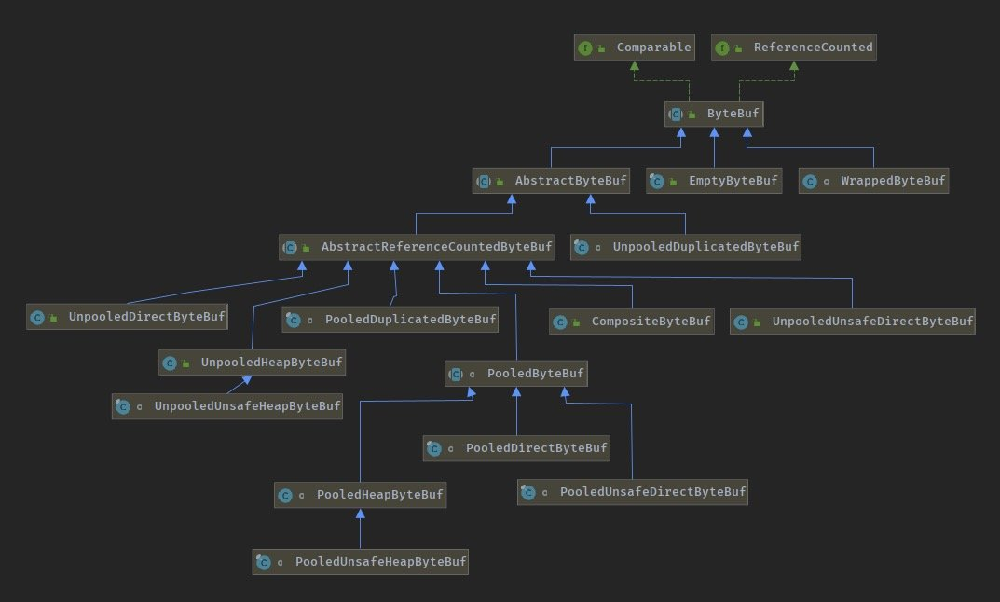
根据操作和存储方式大概可分为3种大类：
Pooled：使用池化内存。从预先分配好的内存池中取出一段连续空间给应用使用；
Direct：使用堆外内存。不在 JVM 中管理这一部分内存的使用，由 Netty 来控制分配和释放；
UnSafe：使用 JDK底层的 UnSafe api 基于对象的内存地址进行操作。
根据以上三个大的方向，对应的子类：
- PooledHeapByteBuf ：池化的堆内缓冲区；
- PooledUnsafeHeapByteBuf ：池化的 Unsafe 堆内缓冲区；
- PooledDirectByteBuf ：池化的直接(堆外)缓冲区；
- PooledUnsafeDirectByteBuf ：池化的 Unsafe 直接(堆外)缓冲区；
- UnpooledHeapByteBuf ：非池化的堆内缓冲区；
- UnpooledUnsafeHeapByteBuf ：非池化的 Unsafe 堆内缓冲区；
- UnpooledDirectByteBuf ：非池化的直接(堆外)缓冲区；
- UnpooledUnsafeDirectByteBuf ：非池化的 Unsafe 直接(堆外)缓冲区；
除了上面这些，另外Netty 的 Buffer 家族还有 CompositeByteBuf、ReadOnlyByteBufferBuf、ThreadLocalDirectByteBuf 等等。
使用 堆内存 和 堆外内存各自有各自的好处。
堆内存分配回收快，可被JVM自动管理，缺点是多一次复制，需要从内核缓冲区复制到堆缓冲区。
直接内存缓冲区需要自己处理回收相关的操作，但是减少了一次复制。
业务上来看，对于 I/O 操作比较频繁的通信操作，要求响应快这种情况下使用直接内存比较合适；对于业务的数据处理，对性能没有什么要求使用堆内存合适。
引用计数器：AbstractReferenceCountedByteBuf
由上面的类结构能看到所有的子类都是继承 AbstractReferenceCountedByteBuf 类，这个类的主要功能是对引用进行计数，就是 Netty 自己实现的内存回收机制，类似于 JVM 的引用计数。非池化的 ByteBuf 每次 I/O 都会创建一个 ByteBuf，可由 JVM 管理其生命周期；池化的 ByteBuf 要手动进行内存回收和释放。
AbstractReferenceCountedByteBuf 内部有两个变量：
Copyprivate static final AtomicIntegerFieldUpdater<AbstractReferenceCountedByteBuf> refCntUpdater;
private volatile int refCnt = 1;
static {
AtomicIntegerFieldUpdater<AbstractReferenceCountedByteBuf> updater = PlatformDependent.newAtomicIntegerFieldUpdater(AbstractReferenceCountedByteBuf.class, "refCnt");
if (updater == null) {
updater = AtomicIntegerFieldUpdater.newUpdater(AbstractReferenceCountedByteBuf.class, "refCnt");
}
refCntUpdater = updater;
}
注意到在 AbstractReferenceCountedByteBuf 内部并不直接对 refCnt 进行操作，这里必须要保证操作的原子性， Netty 包装了一个 AtomicIntegerFieldUpdater， 原子性 int 类型字段更新器，通过反射的方式拿到字段，底层调用 UnSafe.compareAndSwapInt() 来实现原子更新。
refCnt 使用 volatile 修饰，保证各个线程之间可见。如果单独使用原子操作面对并发情况并不一定能保证 refCnt 的值正确。
池化堆内存分析-PooledByteBuf
从上面的类图中可以看到 PooledHeapByteBuf、PooledUnsafeHeapByteBuf、PooledDirectByteBuf都继承自 PooledByteBuf。
Copyabstract class PooledByteBuf<T> extends AbstractReferenceCountedByteBuf {
// 对象池的对象引用，通过Recycler.Handle实现对象池的功能，线程级的缓存
private final Recycler.Handle<PooledByteBuf<T>> recyclerHandle;
// PoolChunk
protected PoolChunk<T> chunk;
// chunk分配内存后的handle(位置)
protected long handle;
// 实际内存区域（byte[]或者ByteBuffer）
protected T memory;
// 实际内存区域的开始偏移量
protected int offset;
// 长度
protected int length;
// 最大长度
int maxLength;
// 线程缓存
PoolThreadCache cache;
// 临时的Nio缓冲区
ByteBuffer tmpNioBuf;
// ByteBuf分配器
private ByteBufAllocator allocator;
protected PooledByteBuf(Recycler.Handle<? extends PooledByteBuf<T>> recyclerHandle, int maxCapacity) {
super(maxCapacity);
this.recyclerHandle = (Handle<PooledByteBuf<T>>) recyclerHandle;
}
}
池化的主要操作是对象管理， Netty 提供了 Recycler 类作为对象池管理员，先说结论，等会再分析：
- 每个线程都有一个当前线程的对象池，Recycler 类提供了一个类成员变量用来保存各个线程曾经使用过的对象，当然不能无限新增，有一定的回收机制。
- 每个线程结束当前对象池即被回收。
对象池通过 Recycler 里面定义以下对象来实现对象池功能：
| 对象名 | 作用 |
|---|---|
| DefaultHandle | Recycler 中缓存的对象都会包装成 DefaultHandle 类 |
| WeakOrderQueue | 存储其它线程回收到当前线程 stack 的对象，每个线程的 Stack 拥有1个WeakOrderQueue 链表，链表每个节点对应1个其它线程的 WeakOrderQueue，其它线程回收到该 Stack 的对象就存储在这个 WeakOrderQueue 里。当某个线程从 Stack中获取不到对象时会从 WeakOrderQueue 中获取对象。 |
| Stack | 存储当前线程回收的对象。Stack 会与线程绑定，即每个用到 Recycler 的线程都会拥有1个 Stack，在该线程中获取对象都是在该线程的 Stack 中弹出出一个可用对象。对象的获取和回收对应 Stack 的 pop 和 push，即获取对象时从 Stack 中弹出1个DefaultHandle，回收对象时将对象包装成 DefaultHandle push 到 Stack 中。 |
| Link | WeakOrderQueue 中包含1个 Link 链表，回收对象存储在链表某个 Link 节点里，当Link节点存储的回收对象满了时会新建1个 Link 放在 Link 链表尾。 |
子类继承它时需要实现上面贴出代码中的构造方法, 因为不同的子类针对不同的对象进行池化，具体是什么对象由子类自己实现。这个构造方法初始化了 Recycler.Handle，我们上面说对象池属于当前线程，那如果在当前线程中 new 了多个 Recycler.Handle，这还是同一个对象池吗？接着看 Recycler 的代码：
Copypublic abstract class Recycler<T> {
/**
* 表示一个不需要回收的包装对象，用于在禁止使用Recycler功能时进行占位的功能
* 仅当io.netty.recycler.maxCapacityPerThread<=0时用到
*/
@SuppressWarnings("rawtypes")
private static final Handle NOOP_HANDLE = new Handle() {
@Override
public void recycle(Object object) {
// NOOP
}
};
//当前线程ID,WeakOrderQueue的id
private static final AtomicInteger ID_GENERATOR = new AtomicInteger(Integer.MIN_VALUE);
private static final int OWN_THREAD_ID = ID_GENERATOR.getAndIncrement();
private static final int DEFAULT_INITIAL_MAX_CAPACITY_PER_THREAD = 32768; // Use 32k instances as default.
/**
* 每个Stack默认的最大容量
* 注意：
* 1、当io.netty.recycler.maxCapacityPerThread<=0时，禁用回收功能（在netty中，只有=0可以禁用，<0默认使用4k）
* 2、Recycler中有且只有两个地方存储DefaultHandle对象（Stack和Link），
* 最多可存储MAX_CAPACITY_PER_THREAD + 最大可共享容量 = 4k + 4k/2 = 6k
*
* 实际上，在netty中，Recycler提供了两种设置属性的方式
* 第一种：-Dio.netty.recycler.ratio等jvm启动参数方式
* 第二种：Recycler(int maxCapacityPerThread)构造器传入方式
*/
private static final int DEFAULT_MAX_CAPACITY_PER_THREAD;
//每个Stack默认的初始容量，默认为256,后续根据需要进行扩容，直到<=MAX_CAPACITY_PER_THREAD
private static final int INITIAL_CAPACITY;
//最大可共享的容量因子= maxCapacity / maxSharedCapacityFactor，默认为2
private static final int MAX_SHARED_CAPACITY_FACTOR;
//每个线程可拥有多少个WeakOrderQueue，默认为2*cpu核数,实际上就是当前线程的Map<Stack<?>, WeakOrderQueue>的size最大值
private static final int MAX_DELAYED_QUEUES_PER_THREAD;
/**
* WeakOrderQueue中的Link中的数组DefaultHandle<?>[] elements容量，默认为16，
* 当一个Link中的DefaultHandle元素达到16个时，会新创建一个Link进行存储，这些Link组成链表，当然
* 所有的Link加起来的容量要<=最大可共享容量。
*/
private static final int LINK_CAPACITY;
//回收因子，默认为8,即默认每8个对象，允许回收一次，直接扔掉7个，可以让recycler的容量缓慢的增大，避免爆发式的请求
private static final int RATIO;
static {
// In the future, we might have different maxCapacity for different object types.
// e.g. io.netty.recycler.maxCapacity.writeTask
// io.netty.recycler.maxCapacity.outboundBuffer
int maxCapacityPerThread = SystemPropertyUtil.getInt("io.netty.recycler.maxCapacityPerThread",
SystemPropertyUtil.getInt("io.netty.recycler.maxCapacity", DEFAULT_INITIAL_MAX_CAPACITY_PER_THREAD));
if (maxCapacityPerThread < 0) {
maxCapacityPerThread = DEFAULT_INITIAL_MAX_CAPACITY_PER_THREAD;
}
DEFAULT_MAX_CAPACITY_PER_THREAD = maxCapacityPerThread;
MAX_SHARED_CAPACITY_FACTOR = max(2,
SystemPropertyUtil.getInt("io.netty.recycler.maxSharedCapacityFactor",
2));
MAX_DELAYED_QUEUES_PER_THREAD = max(0,
SystemPropertyUtil.getInt("io.netty.recycler.maxDelayedQueuesPerThread",
NettyRuntime.availableProcessors() * 2));
LINK_CAPACITY = safeFindNextPositivePowerOfTwo(
max(SystemPropertyUtil.getInt("io.netty.recycler.linkCapacity", 16), 16));
RATIO = safeFindNextPositivePowerOfTwo(SystemPropertyUtil.getInt("io.netty.recycler.ratio", 8));
INITIAL_CAPACITY = min(DEFAULT_MAX_CAPACITY_PER_THREAD, 256);
}
private final int maxCapacityPerThread;
private final int maxSharedCapacityFactor;
private final int ratioMask;
private final int maxDelayedQueuesPerThread;
/**
* 每一个线程包含一个Stack对象
* 1、每个Recycler对象都有一个threadLocal
* 原因：因为一个Stack要指明存储的对象泛型T，而不同的Recycler<T>对象的T可能不同，所以此处的FastThreadLocal是对象级别
* 2、每条线程都有一个Stack<T>对象
*/
private final FastThreadLocal<Stack<T>> threadLocal = new FastThreadLocal<Stack<T>>() {
@Override
protected Stack<T> initialValue() {
return new Stack<T>(Recycler.this, Thread.currentThread(), maxCapacityPerThread, maxSharedCapacityFactor,
ratioMask, maxDelayedQueuesPerThread);
}
};
protected Recycler() {
this(DEFAULT_MAX_CAPACITY_PER_THREAD);
}
}
在 PooledByteBuf 中通过持有 DefaultHandle: ecycler.Handle 调用 recycle()方法将对象转为 DefaultHandle 存入 Recycler：
Copy@Override
public void recycle(Object object) {
if (object != value) {
throw new IllegalArgumentException("object does not belong to handle");
}
stack.push(this);
}
将当前 DefaultHandle 存入 Stack，从这里看：
Copystatic final class DefaultHandle<T> implements Handle<T> {
private int lastRecycledId;
private int recycleId;
boolean hasBeenRecycled;
private Stack<?> stack;
private Object value;
DefaultHandle(Stack<?> stack) {
this.stack = stack;
}
......
}
DefaultHandle 初始化的时候会带过来一个 Stack 赋值给当前的 stack，那么 Stack 是在什么时候初始化的呢，看这个代码：
Copyprivate final FastThreadLocal<Stack<T>> threadLocal = new FastThreadLocal<Stack<T>>() {
@Override
protected Stack<T> initialValue() {
return new Stack<T>(Recycler.this, Thread.currentThread(), maxCapacityPerThread, maxSharedCapacityFactor,
ratioMask, maxDelayedQueuesPerThread);
}
};
一个 final 类型的 FastThreadLocal 对象包着 Stack 完成了初始化。FastThreadLocal 是 Netty 自己实现的 ThreadLocal，主要优化了 ThreadLocal 的 访问速度 和 内存泄漏 等问题，这里可以说明每个 Recycler 对象中的 Stack 是当前线程内共享的。
WeakOrderQueue 的作用又是什么呢？我们看到有这样一行代码：
Copyprivate static final FastThreadLocal<Map<Stack<?>, WeakOrderQueue>> DELAYED_RECYCLED =
new FastThreadLocal<Map<Stack<?>, WeakOrderQueue>>() {
@Override
protected Map<Stack<?>, WeakOrderQueue> initialValue() {
return new WeakHashMap<Stack<?>, WeakOrderQueue>();
}
};
static final 表明当前 DELAYED_RECYCLED 对象是 Recycler 类变量，而不是 成员变量。这里表示每一个 Stack 都对应一个 WeakOrderQueue。这里还是没有看懂到底有什么用，我们看使用到它的地方：
Copyvoid push(DefaultHandle<?> item) {
Thread currentThread = Thread.currentThread();
if (thread == currentThread) {
// The current Thread is the thread that belongs to the Stack, we can try to push the object now.
pushNow(item);
} else {
// The current Thread is not the one that belongs to the Stack, we need to signal that the push
// happens later.
pushLater(item, currentThread);
}
}
private void pushNow(DefaultHandle<?> item) {
// (item.recycleId | item.lastRecycleId) != 0 等价于 item.recycleId!=0 && item.lastRecycleId!=0
// 当item开始创建时item.recycleId==0 && item.lastRecycleId==0
// 当item被recycle时，item.recycleId==x，item.lastRecycleId==y 进行赋值
// 当item被poll之后， item.recycleId = item.lastRecycleId = 0
// 所以当item.recycleId 和 item.lastRecycleId 任何一个不为0，则表示回收过
if ((item.recycleId | item.lastRecycledId) != 0) {
throw new IllegalStateException("recycled already");
}
item.recycleId = item.lastRecycledId = OWN_THREAD_ID;
int size = this.size;
if (size >= maxCapacity || dropHandle(item)) {
// Hit the maximum capacity or should drop - drop the possibly youngest object.
return;
}
// 如果对象池已满则扩容，扩展为当前 2 倍大小
if (size == elements.length) {
elements = Arrays.copyOf(elements, min(size << 1, maxCapacity));
}
elements[size] = item;
this.size = size + 1;
}
private void pushLater(DefaultHandle<?> item, Thread thread) {
// we don't want to have a ref to the queue as the value in our weak map
// so we null it out; to ensure there are no races with restoring it later
// we impose a memory ordering here (no-op on x86)
Map<Stack<?>, WeakOrderQueue> delayedRecycled = DELAYED_RECYCLED.get();
WeakOrderQueue queue = delayedRecycled.get(this);
// 如果没有获取到 WeakOrderQueue，说明当前线程第一次帮该 Stack 回收对象
if (queue == null) {
// 每个线程最多能帮 maxDelayedQueues（2CPU）个外部 Stack 回收对象，超过数量回收失败
if (delayedRecycled.size() >= maxDelayedQueues) {
// 插入一个特殊的 WeakOrderQueue，下次回收时看到 WeakOrderQueue.DUMMY 就说明该线程无法帮该 Stack 回收
delayedRecycled.put(this, WeakOrderQueue.DUMMY);
return;
}
// 别的线程最多帮这个 Stack 回收 2K 个对象，检查是否超过数量，如果没有超过，就向这个 Stack 头插法新建 WeakOrderQueue 对象
if ((queue = WeakOrderQueue.allocate(this, thread)) == null) {
// drop object
return;
}
delayedRecycled.put(this, queue);
// 看到 WeakOrderQueue.DUMMY 就说明该线程无法帮该 Stack 回收，直接返回
} else if (queue == WeakOrderQueue.DUMMY) {
// drop object
return;
}
// 向 WeakOrderQueue 对应的 Link 存放对象
queue.add(item);
}
在存放 DefaultHandle 到 Stack 的时候会判断是否是当前线程，如果是就调用 pushNow()方法，如果不是则调用 pushLater() 方法。
pushNow() 方法中首先判断一个 对象是否是被回收过，如果是则抛异常。如果没有则存入 elements 数组中。
pushLater() 方法则先把 DefaultHandle 放入 DELAYED_RECYCLED 持有的 WeakOrderQueue 中，后面再压如 Stack。
这里大概的意思就是如果是当前线程创建的对象就存入 Stack，如果不是当前线程创建的就放入WeakOrderQueue。我们看 WeakOrderQueue 类里面有有一个子类 Link：
Copyprivate static final class WeakOrderQueue {
static final WeakOrderQueue DUMMY = new WeakOrderQueue();
// Let Link extend AtomicInteger for intrinsics. The Link itself will be used as writerIndex.
@SuppressWarnings("serial")
private static final class Link extends AtomicInteger {
private final DefaultHandle<?>[] elements = new DefaultHandle[LINK_CAPACITY];
private int readIndex;
private Link next;
}
// chain of data items
private Link head, tail;
// pointer to another queue of delayed items for the same stack
private WeakOrderQueue next;
private final WeakReference<Thread> owner;
private final int id = ID_GENERATOR.getAndIncrement();
private final AtomicInteger availableSharedCapacity;
private WeakOrderQueue() {
owner = null;
availableSharedCapacity = null;
}
......
}
Link 的结构是一个链表，存放了 DefaultHandle<?>[] 对象，放入的时机就是上面的 pushLater() 方法。
这里我们已经全部接触到了上面提到的 4 个对象，我用一张图来表述他们之间的关系：
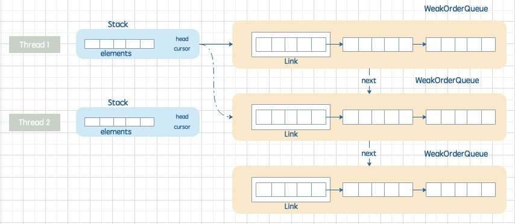
我们再来总结一下 4 者的关系：
- 每一个 Recycler 对象 都包含一个 Stack；
- 每一个 Stack 中都包含一个
DefaultHandle<?>[]数组，用于保存 DefaultHandle； - Recyler 类包含一个类对象
FastThreadLocal<Map<Stack<?>, WeakOrderQueue>> DELAYED_RECYCLED，无论有多少个 Recyler 对象，都只会有一个DELAYED_RECYCLED。它的作用是保存除当前线程外别的线程创建的 DefaultHandle。 - WeakOrderQueue 对象中存储一个以 Head 为首的 Link 数组，每个 Link 对象中存储一个
DefaultHandle[]数组，用于存放回收对象。
同线程中是如何获取对象的呢？
Copypublic final T get() {
/**
* 如果maxCapacityPerThread == 0，禁止回收功能
* 创建一个对象，其Recycler.Handle<> handle属性为NOOP_HANDLE，该对象的recycle(Object object)不做任何事情，即不做回收
*/
if (MAX_CAPACITY_PER_THREAD == 0) {
return newObject((Handle<T>) NOOP_HANDLE);
}
//获取当前线程的Stack<T>对象
Stack<T> stack = threadLocal.get();
//从Stack<T>对象中获取DefaultHandle<T>
DefaultHandle<T> handle = stack.pop();
if (handle == null) {
//新建一个DefaultHandle对象 -> 然后新建T对象 -> 存储到DefaultHandle对象
//此处会发现一个DefaultHandle对象对应一个Object对象，二者相互包含。
handle = stack.newHandle();
handle.value = newObject(handle);
}
return handle.value;
}
调用 Stack 的 pop()方法获取 DefaultHandle 对象：
CopyDefaultHandle<T> pop() {
int size = this.size;
if (size == 0) {
if (!scavenge()) {
return null;
}
size = this.size;
}
size --;
DefaultHandle ret = elements[size];
elements[size] = null;
if (ret.lastRecycledId != ret.recycleId) {
throw new IllegalStateException("recycled multiple times");
}
ret.recycleId = 0;
ret.lastRecycledId = 0;
this.size = size;
return ret;
}
当 Stack 中 DefaultHandle[] 的 size=0 时，需要从其他线程的 WeakOrderQueue 中转移数据到 Stack 中的DefaultHandle[]，即调用 scavenge() 方法。当 Stack 中的 DefaultHandle[] 中最终有了数据时直接获取最后一个元素，并进行一些健康检查。
假设最终确实无法从对象池中获取到对象，则会首先创建一个 DefaultHandle 对象，之后调用 Recycler 的子类重写的 newObject() 方法。
DirectBuffer-直接内存分配
Netty 中的堆外内存分配主要是调用 NIO 的 DirectByteBuffer 来操作。DirectByteBuffer 与 ByteBuffer 的区别在于底层没有使用 byte[] hb 来承接数据，而是放在了堆外管理，DirectByteBuffer的创建就是使用了 malloc 申请的内存。
如果我们使用普通的 Buffer 来分配内存是这样的：
CopyByteBuffer buf = ByteBuffer.allocate(1024);
这种方式分配的内存底层是一个 byte[] 数组保存在 JVM 堆上。
当我们想脱离 JVM 的管理，直接在系统内存上去分配一块连续空间的时候，Java 也提供了这种方式。DirectByteBuffer 并不是一个 public 类型的 class，所以我们无法直接使用，一般通过如下方式调用：
CopyByteBuffer buf = ByteBuffer.allocateDirect(1024);
的构造方法如下：
CopyDirectByteBuffer(int cap) { // package-private
super(-1, 0, cap, cap);
//是否页对齐
boolean pa = VM.isDirectMemoryPageAligned();
//页的大小4K
int ps = Bits.pageSize();
//最小申请1K，若需要页对齐，那么多申请1页，以应对初始地址的页对齐问题
long size = Math.max(1L, (long)cap + (pa ? ps : 0));
//检查堆外内存是否够用, 并对分配的直接内存做一个记录
Bits.reserveMemory(size, cap);
long base = 0;
try {
//直接内存的初始地址, 返回初始地址
base = unsafe.allocateMemory(size);
} catch (OutOfMemoryError x) {
Bits.unreserveMemory(size, cap);
throw x;
}
//对直接内存初始化
unsafe.setMemory(base, size, (byte) 0);
//若需要页对其，并且不是页的整数倍，在需要将页对齐（默认是不需要进行页对齐的
if (pa && (base % ps != 0)) {
// Round up to page boundary
address = base + ps - (base & (ps - 1));
} else {
address = base;
}
//声明一个Cleaner对象用于清理该DirectBuffer内存
cleaner = Cleaner.create(this, new Deallocator(base, size, cap));
att = null;
}
首先 Bits.reserveMemory(size, cap) 方法用来判断系统是否有足够的空间可以申请，如果已经没有空间可以申请，则抛出 OOM：
Copystatic void reserveMemory(long size, int cap) {
// 获取最大可以申请的对外内存大小，默认值是64MB
// 可以通过参数-XX:MaxDirectMemorySize=<size>设置这个大小
if (!memoryLimitSet && VM.isBooted()) {
maxMemory = VM.maxDirectMemory();
memoryLimitSet = true;
}
//如果计算当前用户申请的空间 小于用户设置的最大堆外空间大小，且小于当前可用的
//系统内存则表示申请通过
// optimist!
if (tryReserveMemory(size, cap)) {
return;
}
final JavaLangRefAccess jlra = SharedSecrets.getJavaLangRefAccess();
//尝试释放那些正在正在清理中的堆外内存任务以释放一些空间
while (jlra.tryHandlePendingReference()) {
if (tryReserveMemory(size, cap)) {
return;
}
}
// 如果经历上面两步空间还是不足，那就只好手动调用 System.gc()释放内存
System.gc();
// a retry loop with exponential back-off delays
// (this gives VM some time to do it's job)
boolean interrupted = false;
try {
long sleepTime = 1;
int sleeps = 0;
while (true) {
if (tryReserveMemory(size, cap)) {
return;
}
if (sleeps >= MAX_SLEEPS) {
break;
}
if (!jlra.tryHandlePendingReference()) {
try {
Thread.sleep(sleepTime);
sleepTime <<= 1;
sleeps++;
} catch (InterruptedException e) {
interrupted = true;
}
}
}
// no luck
throw new OutOfMemoryError("Direct buffer memory");
} finally {
if (interrupted) {
// don't swallow interrupts
Thread.currentThread().interrupt();
}
}
}
private static boolean tryReserveMemory(long size, int cap) {
// -XX:MaxDirectMemorySize限制的是用户申请的大小，而不考虑对齐情况
// 所以使用两个变量来统计：
// reservedMemory：真实的目前保留的空间
// totalCapacity：目前用户申请的空间
long totalCap;
while (cap <= maxMemory - (totalCap = totalCapacity.get())) {
if (totalCapacity.compareAndSet(totalCap, totalCap + cap)) {
reservedMemory.addAndGet(size);
count.incrementAndGet();
return true;
}
}
return false;
}
可以通过 -XX:+PageAlignDirectMemor 参数控制堆外内存分配是否需要按页对齐，默认不对齐。
Bits#reserveMemory() 方法判断是否有足够内存不是判断物理机是否有足够内存，而是判断 JVM 启动时，指定的堆外内存空间大小是否有剩余的空间。这个大小由参数 -XX:MaxDirectMemorySize=<size> 设置。
接着调用 base = unsafe.allocateMemory(size) 操作堆外内存, 返回的是该堆外内存的直接地址, 存放在 address 中, 以便通过 address 进行堆外数据的读取与写入。而 allocateMemory() 是一个 native 方法，会调用 malloc 方法。UnSafe 类底层是基于 C 语言的，所以在 Java 源码中看不到，我们可以下载 OpenJDK 的源码看看，源码链接：https://github.com/openjdk/jdk/blob/5a6954abbabcd644ad2639ea11e843da5b17a11d/src/hotspot/share/prims/unsafe.cpp#L359
CopyUNSAFE_ENTRY(jlong, Unsafe_AllocateMemory0(JNIEnv *env, jobject unsafe, jlong size)) {
size_t sz = (size_t)size;
assert(is_aligned(sz, HeapWordSize), "sz not aligned");
void* x = os::malloc(sz, mtOther);
return addr_to_java(x);
} UNSAFE_END
可以看到底层是使用系统的malloc()函数来申请内存。
在 C 语言的内存分配和释放函数 malloc/free，必须要一一对应，否则就会出现内存泄露或者是野指针的非法访问。Java 中 ByteBuffer 申请的堆外内存需要手动释放吗？ByteBuffer 申请的堆外内存也是由 GC 负责回收的，Hotspot 在 GC 时会扫描 Direct ByteBuffer 对象是否有引用，如没有，当堆内的引用被 gc 回收时通过虚拟引用回收其占用的堆外内存。（前提是没有关闭 DisableExplicitGC）
-XX:+DisableExplicitGC
这个参数作用是禁止显式调用 GC，即通过 System.gc() 函数调用。如果加上了这个 JVM启动参数，那么代码中调用 System.gc() 没有任何效果，相当于是没有这行代码一样。
上面贴出来而代码示例：DirectByteBuffer 的构造函数里面：
CopyBits.reserveMemory(size, cap);
该方法去申请堆外内存是会显式调用 System.gc()的。
也就是说使用了Java NIO 中的 Direct memory，那么 -XX:+DisableExplicitGC一定要谨慎设置，存在潜在的内存泄露风险。
再说另一个问题：-XX:MaxDirectMemorySize=<size>参数用来限制能申请的最大堆外内存大小，那如果我忘记设置这个值默认能够申请的堆内存大小是多少呢？我们还是要看 OpenJDK源码，这个参数的设置位于：https://github.com/openjdk/jdk/blob/847a3baca8a19b4f506dcaf23079e1b339e5321b/src/java.base/share/classes/jdk/internal/misc/VM.java
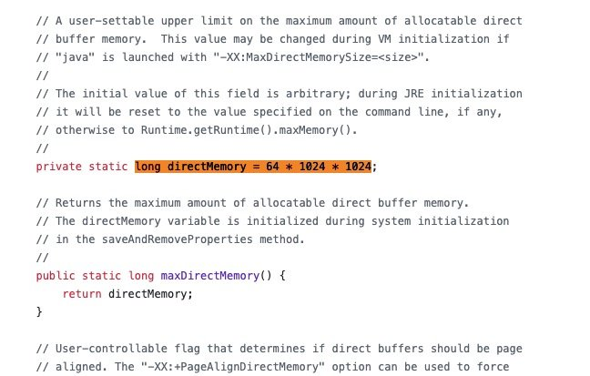
可以看到代码中默认是 64M。但是你好好看一下注释：
The initial value of this field is arbitrary; during JRE initialization
it will be reset to the value specified on the command line, if any,
otherwise to Runtime.getRuntime().maxMemory().
这个值只是在初始化的时候的默认赋值。如果用户有通过参数设置自己的值就会用设置的参数值取代，否则：就会使用 JVM 参数 -Xmx 最大堆的值取代。所以，64M 是没有发挥到作用的。
堆外内存的回收
既然在 heap 外分配了内存空间给 Java 线程使用，JVM 也不管回收这事。那是怎么触发回收的呢？这里要说明，JVM 并不是真的不管，堆外分配内存保存对象这事儿板上钉钉，那 JVM 是怎么着知道堆外哪哪块是我这个对象的专属空间，这个就要求在 JVM 中要保存一个引用的关系。
在 DirectBuffer 构造函数最后面有这么一句：
Copycleaner = Cleaner.create(this, new Deallocator(base, size, cap));
使用 Cleaner 机制注册内存回收处理函数。Java 本身提供了finalize()机制来进行垃圾回收，无赖它靠不住不到内存撑不住的最后时刻它是不会被触发的，所以 Java 官方都不推荐你这样用。Java 官方推荐使用虚引用-PhantomReference 来处理对象的回收，Cleaner 就是 PhantomReference 的子类，用来处理对象回收流程。
这里create()方法传入了一个参数 Deallocator 对象，Deallocator 继承了Runnable，作为可执行的线程，看一下run() 方法：
Copypublic void run() {
if (address == 0) {
// Paranoia
return;
}
unsafe.freeMemory(address);
address = 0;
Bits.unreserveMemory(size, capacity);
}
这里调用了 UnSafe 的 freeMemory()拿到堆外内存地址偏移量来释放内存。
ByteBuf 的管理
在 Netty 中并不是通过 new 的方式来创建一个 Bytebuf 对象。常用的有三种方式：
- ByteBufAllocator 创建；
- ByteBufUtil：提供一些实用的静态方法用于 内存分配 和 对象转换；
- Unpooled 非池化内存分配。
ByteBufAllocator 是 Netty 中最顶层的内存分配接口，负责所有 Bytebuf 类型的分配，AbstractByteBufAllocator 是默认实现类。
我们看一下它是如何分配内存空间的：
Copy@Override
public ByteBuf buffer(int initialCapacity) {
if (directByDefault) {
return directBuffer(initialCapacity);
}
return heapBuffer(initialCapacity);
}
首先会检查是否支持分配直接内存，如果支持就优先分配堆外内存空间。
Copy@Override
public ByteBuf directBuffer(int initialCapacity, int maxCapacity) {
if (initialCapacity == 0 && maxCapacity == 0) {
return emptyBuf;
}
validate(initialCapacity, maxCapacity);
return newDirectBuffer(initialCapacity, maxCapacity);
}
protected abstract ByteBuf newDirectBuffer(int initialCapacity, int maxCapacity);
newDirectBuffer() 是一个抽象方法，最终会交给它的子类去实现进行空间分配：
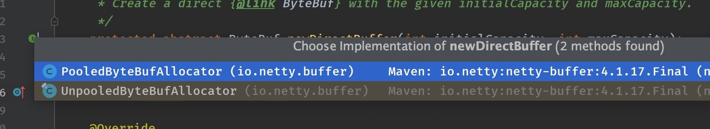
可以看到实现类其实就两种：池化 和 非池化的 buffer 分配。上面的 Buffer 分配我们看到还有 Unsafe 类型的Buffer，那么这里为什么没有体现呢？既然找不到答案，就继续往下看看，我们看一下PooledByteBufAllocator 类的实现：
Copy@Override
protected ByteBuf newDirectBuffer(int initialCapacity, int maxCapacity) {
PoolThreadCache cache = threadCache.get();
PoolArena<ByteBuffer> directArena = cache.directArena;
final ByteBuf buf;
if (directArena != null) {
buf = directArena.allocate(cache, initialCapacity, maxCapacity);
} else {
buf = PlatformDependent.hasUnsafe() ?
UnsafeByteBufUtil.newUnsafeDirectByteBuf(this, initialCapacity, maxCapacity) :
new UnpooledDirectByteBuf(this, initialCapacity, maxCapacity);
}
return toLeakAwareBuffer(buf);
}
首先还是判断是否支持直接内存分配，如果不支持，会判断当前平台是否支持使用 Unsafe 工具包，如果支持那自然优先使用 Unsafe 工具去直接分配内存。
这里有一个 Unsafe 工具类：
CopyUnsafeByteBufUtil.newUnsafeDirectByteBuf(this, initialCapacity, maxCapacity)
Unpooled 使用
一般来说 ByteBufAllocator 已经提供了池化和非池化内存分配的实现，但是 Netty 还是提供了一个简单版的 非池化内存分配工具：Unpooled，以防在极端的情况下你无法使用 ByteBufAllocator 进行内存分配。
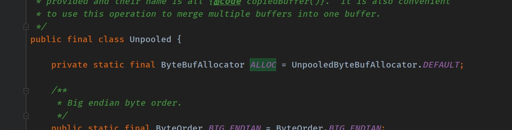
从源码上能看到底层还是引用了 UnpooledByteBufAllocator 类来实现非池化的内存分配。
ByteBufUtil
ByteBufUtil 就更厉害了，默认使用的内存分配方式取决于你的设置：
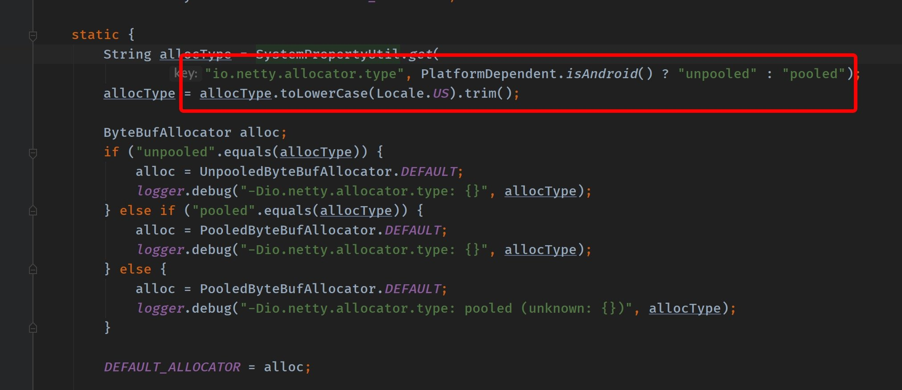
未设置默认会选择池化的方式。
ByteBufUtil 主要提供一些静态方法，其中 hexdump() 以十六进制的表示形式打印ByteBuf 的内容。这在各种情况下都很有用，比如调试的时候记录ByteBuf 的内容，总比你看一堆二进制的天书好吧。
还有 encodeString() 对字符串进行编码转换为 ByteBuffer。